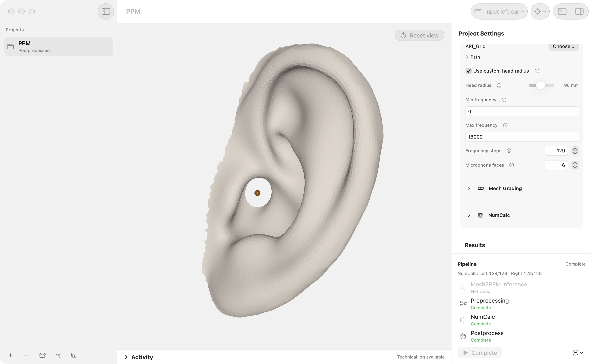
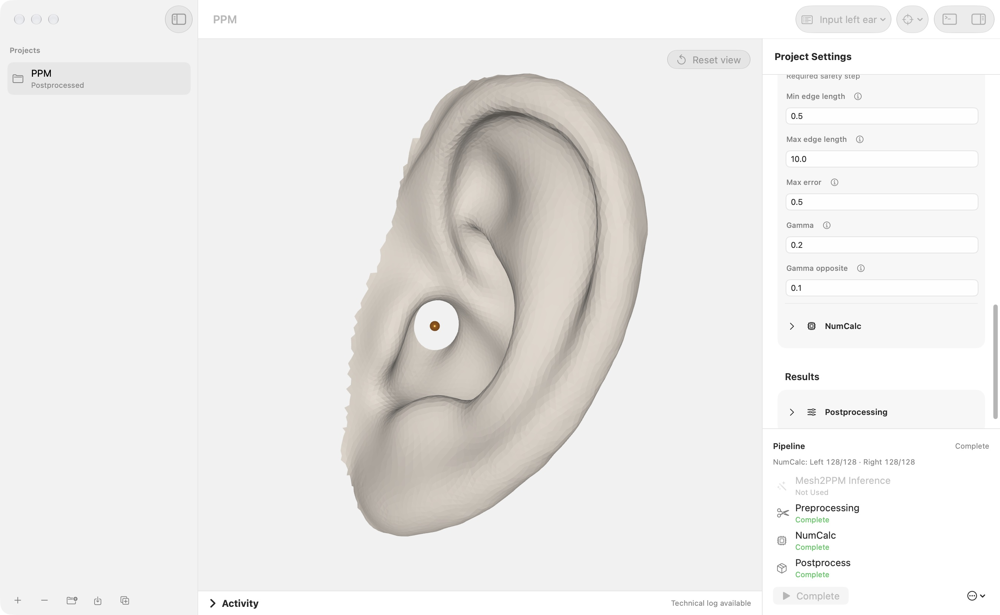
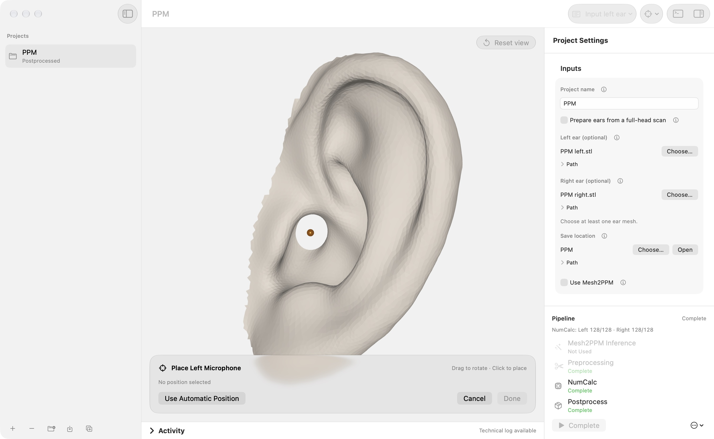
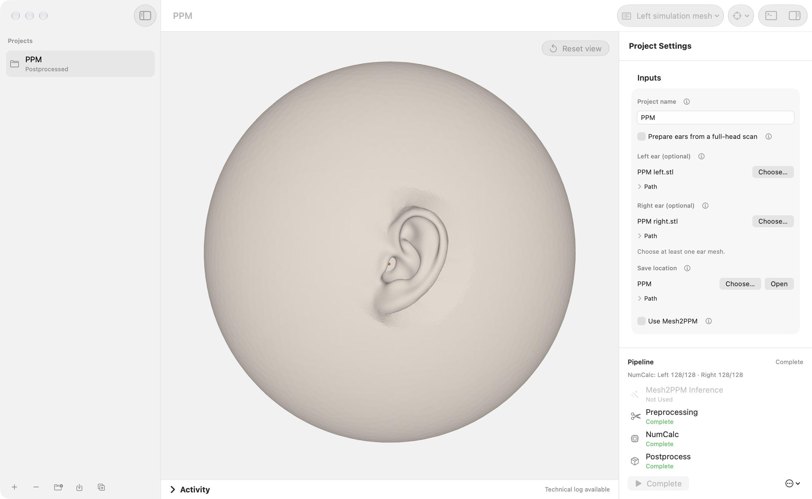
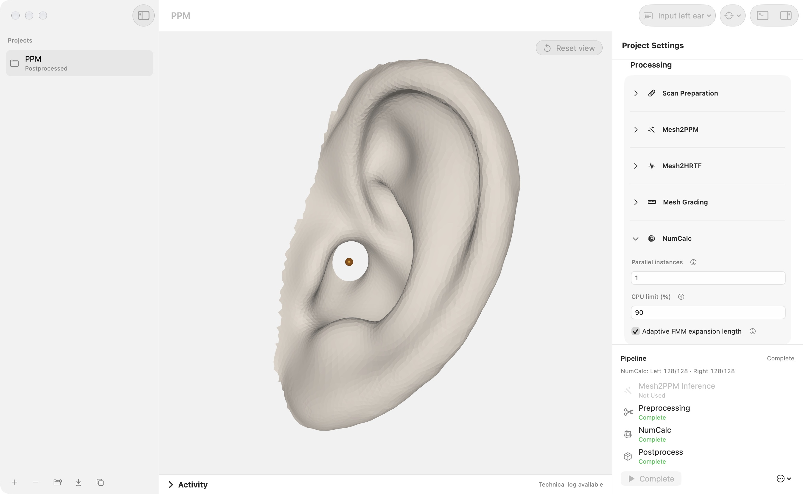
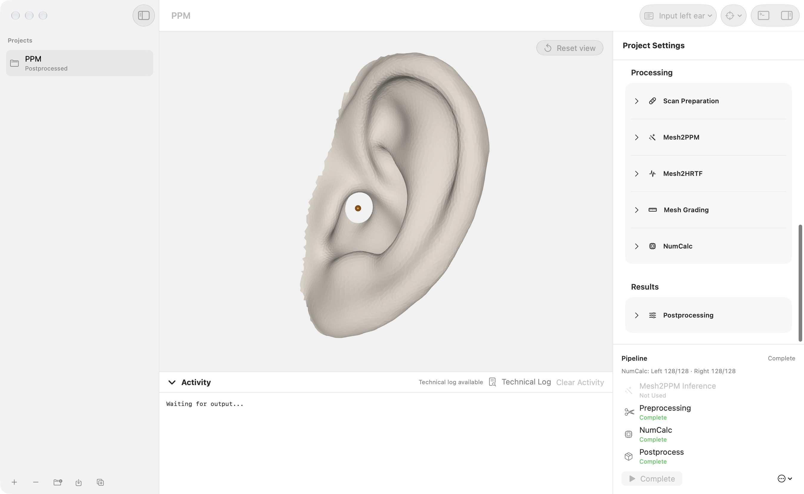
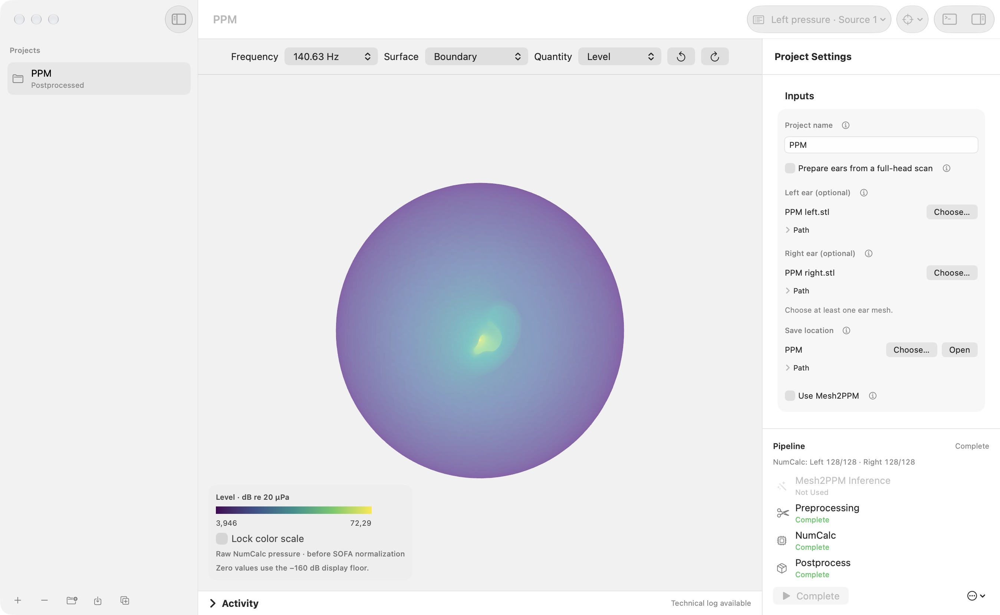
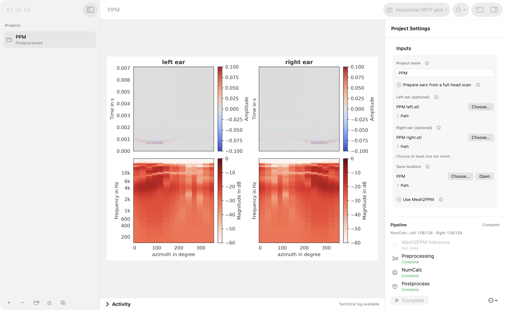
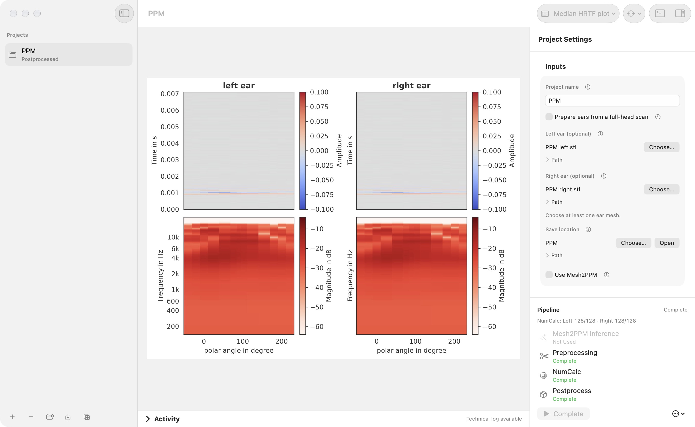
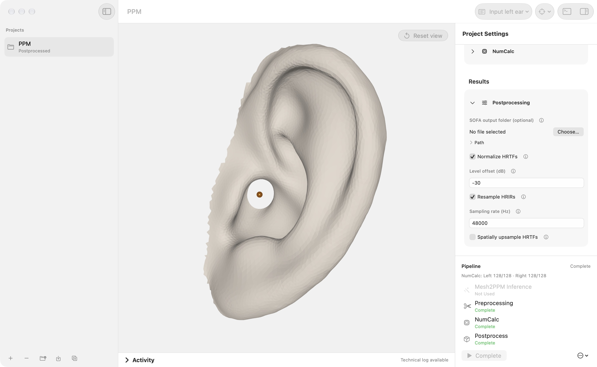

USER GUIDE / SIMULATION AND RESULTS
Inspect the simulation and its results.
Check the simulation geometry, place microphones, follow the solver, and inspect acoustic results before exporting.
Check simulation settings
In Project Settings, expand Mesh2HRTF to choose an evaluation grid, head radius, frequency range, frequency steps, and microphone face count. Mesh Grading controls edge lengths and grading parameters. Prepare and inspect the geometry before a long solve.




Place microphones
Use Pipeline → Place Left Microphone or Place Right Microphone. Click the desired surface position in the viewer, then confirm with Done. Escape cancels placement. Review each side before continuing.


Run and monitor
The pipeline panel shows stage status. Use Run Next Step or select an individual stage from Pipeline → Run Stage. NumCalc settings include parallel instances, CPU limit, and adaptive FMM expansion length. Open the live log for progress and the technical log for detailed diagnostics. Use Stop to interrupt a run.






Explore pressure fields
When solver results are available, choose a pressure artifact from Preview. Select the frequency, surface, and quantity: Level, Magnitude, Phase, Real, or Imaginary. The legend reports the current scale and units.
Lock color scale keeps the displayed range when switching frequencies. Refresh reloads available results. This is raw NumCalc pressure, before SOFA normalization; compare it accordingly.


View HRTF plots
Choose an available horizontal or median HRTF plot from Preview. Preview entries depend on the files generated by the project; refresh project files if newly created results are missing.




Export and process SOFA
Expand Postprocessing to choose an output folder, normalization and level offset, HRIR resampling, and spatial HRTF upsampling. Resampling changes the sample rate; spatial upsampling adds source directions while retaining the sample rate and HRIR length.
Spatial upsampling provides a subdivision level and a separate normalization option. Its results are saved in Upsampled/ alongside the original exports.


Manage projects and outputs
Use sidebar folders to group projects. Duplicate a project to keep a separate version with its results. Removing a project from the sidebar leaves its folder on disk. Reset Outputs removes generated outputs while preserving configured inputs and saved manual ear edits; back up results you need before resetting.